#1825 Wer die Nachtigall stört
Alternativ: To Kill a Mockingbird
Auszeichnungen: 3 Oscars gewonnen für 5 Oscars nominiert 3 GoldenGlobes gewonnen
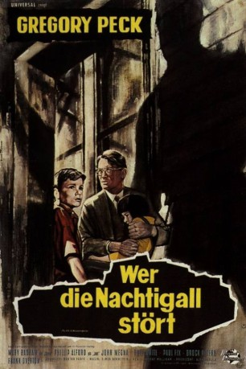 
 IMDB-Wertung: 8.3 / 10 IMDB-TOP-Platzierung: 99
IMDB-Wertung: 8.3 / 10 IMDB-TOP-Platzierung: 99  Metascore: 87
Metascore: 87 
Der auf dem gleichnamigen Roman von Harper Lee basierende Film erzählt die Geschichte einer Kindheit in einer amerikanischen Kleinstadt der 1930er Jahre, in der Vorurteile, Rassenhass und Selbstjustiz an der Tagesordnung waren. Gregory Peck wurde für seine Darstellung des alleinerziehenden Vaters Atticus Finch mit einem Oscar ausgezeichnet.
Jahr: 1962
Dauer: 129 Minuten
FSK: 12
Land: USA Studio: Universal InternationalTonspuren:
Untertitel: Deutsch,
Auflösung: 1080p (1920x1040) Größe: 7608 MB
Genre: Drama
Regisseur: Robert Mulligan
Drehbuch: Harper Lee, Horton Foote
Soundtrack: Elmer Bernstein
Darsteller:
- 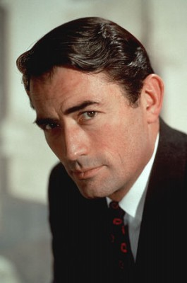 Gregory Peck als Atticus Finch
- Frank Overton als Sheriff Heck Tate
- 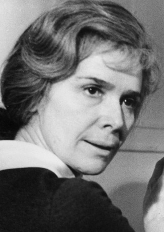 Rosemary Murphy als Maudie Atkinson
- 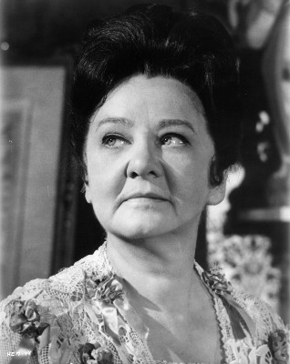 Ruth White als Mrs. Dubose
- 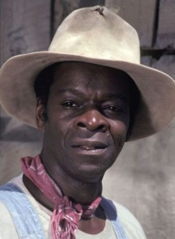 Brock Peters als Tom Robinson
- 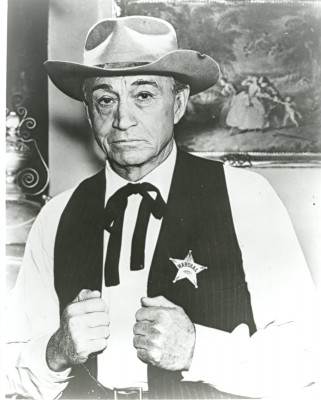 Paul Fix als Judge Taylor
- Collin Wilcox Paxton als Mayella Violet Ewell
- 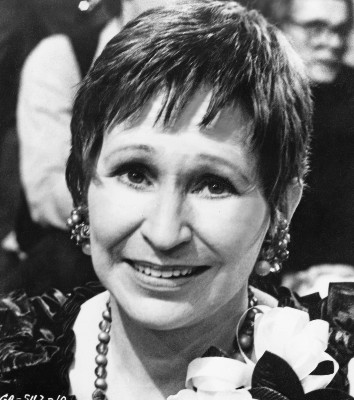 Alice Ghostley als Aunt Stephanie Crawford
 Robert Duvall als Boo Radley
Robert Duvall als Boo Radley- 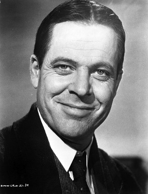 William Windom als Mr. Gilmer - Prosecutor
- 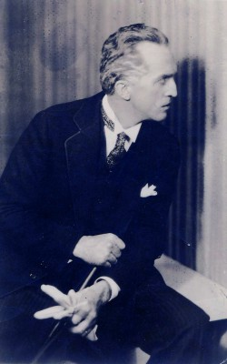 Richard Hale als Nathan Radley
- Mary Badham als Scout
- Phillip Alford als Jem
- 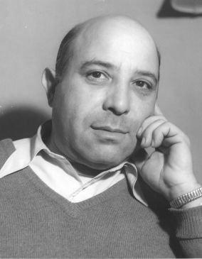 Bobby Barber als Courtroom Spectator , uncredited
- Kim Stanley als Scout as an Adult - Narrator , uncredited
- 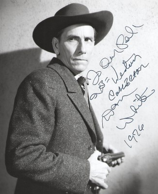 Dan White als Mob Leader , uncredited
- 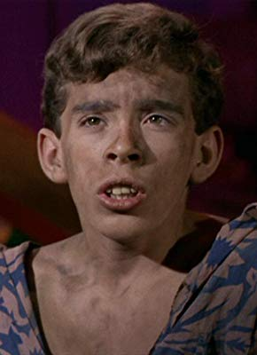 John Megna als Dill Harris
- Estelle Evans als Calpurnia
- James Anderson als Bob Ewell
- Crahan Denton als Walter Cunningham Sr.
- Eddie Baker als Courtroom Spectator , uncredited
- Danny Borzage als Courtroom Spectator , uncredited
- John Breen als Juror , uncredited
- Jess Cavin als Juror , uncredited
- 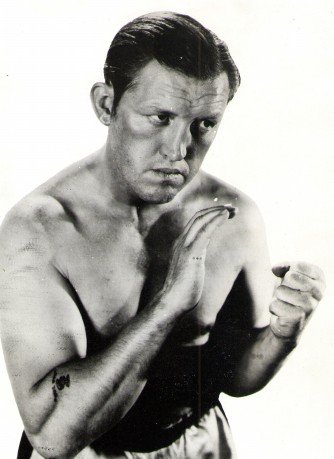 Noble 'Kid' Chissell als Courtroom Spectator , uncredited
- Jack Clinton als Townsman , uncredited
- Steve Condit als Walter Cunningham Jr. , uncredited
- David Crawford als David Robinson , uncredited
- 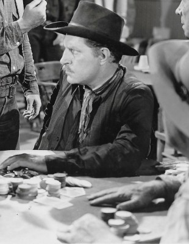 Frank Ellis als Juror , uncredited
- Jamie Forster als Hiram Townsend - Courthouse Steps , uncredited
- Charles Fredericks als Court Clerk , uncredited
- 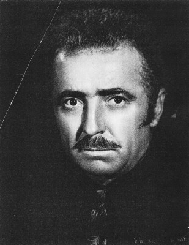 Herman Hack als Courtroom Spectator , uncredited
- Jester Hairston als Spence Robinson - Tom's Father , uncredited
- 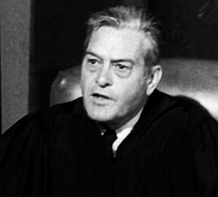 Chuck Hamilton als Courtroom Spectator , uncredited
- Kim Hamilton als Helen Robinson - Tom's Wife , uncredited
- Kim Hector als Cecil Jacobs , uncredited
- 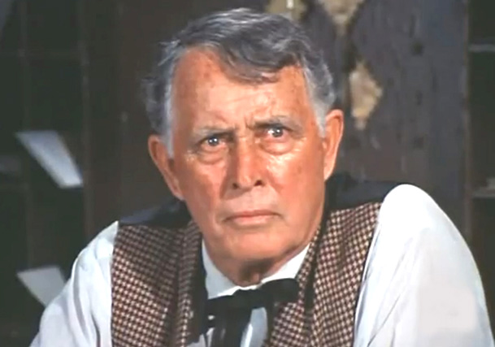 Michael Jeffers als Courtroom Spectator , uncredited
- Dick Johnstone als Courtroom Spectator , uncredited
- 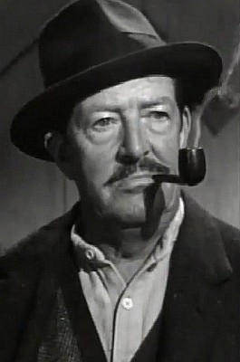 Colin Kenny als Courtroom Spectator , uncredited
 Ethan Laidlaw als Townsman , uncredited
Ethan Laidlaw als Townsman , uncredited- Nancy Marshall als Schoolteacher , uncredited
- 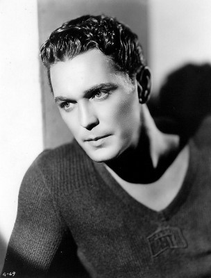 Charles Morton als Courtroom Spectator , uncredited
- Paulene Myers als Jesse - Dubose Servant Girl , uncredited
- 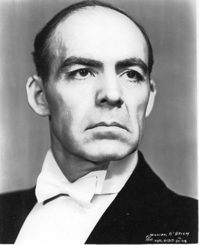 William H. O'Brien als Courtroom Spectator , uncredited
- Charles Perry als Juror , uncredited
- 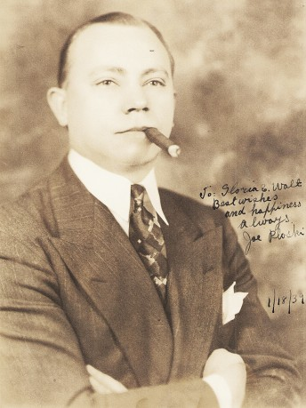 Joe Ploski als Courtroom Spectator , uncredited
- 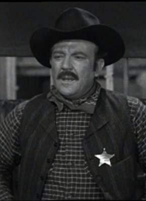 Hugh Sanders als Dr. Reynolds , uncredited
- Barry Seltzer als Schoolboy , uncredited
- Cap Somers als Courtroom Spectator , uncredited
- 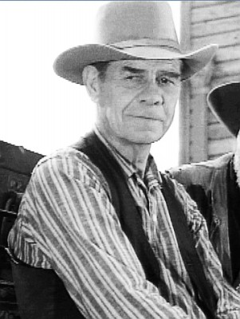 George Sowards als Courtroom Spectator , uncredited
Datei: X:\1962\Wer die Nachtigall stört (1962, FSK12, 1920x1040).mkv seit 26.08.2015
Festplatte: HD 1900-1970
 Es gibt insgesamt 23 Filme in der Gruppe '1962'
Es gibt insgesamt 23 Filme in der Gruppe '1962'